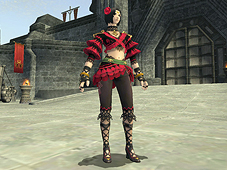
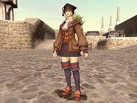

Dancer Job Abilities
Trance (Level 1)
While in effect, lowers TP cost of dances and steps to 0.
Sambas
These dances imbue melee attacks with special enhancements.
Drain Samba (Level 5)
Aspir Samba (Level 25)
Drain Samba II (Level 35)
Haste Samba (Level 45)
Aspir Samba II (Level 60)
Drain Samba III (Level 65)
Waltzes
These dances cure and remove ailments from party members.
Curing Waltz (Level 15)
Divine Waltz (Level 25)
Curing Waltz II (Level 30)
Healing Waltz (Level 35)
Curing Waltz III (Level 50)
Curing Waltz IV (Level 70)
Jigs
These dances enhance your own abilities.
Spectral Jig (Level 25)
Chocobo Jig (Level 55)
Steps
These dance steps enfeeble enemies while granting access to finishing moves.
Quickstep (Level 20)
Box Step (Level 30)
Stutter Step (Level 40)
Flourishes I
Powerful dance steps that can only be used after earning finishing moves.
Animated Flourish (Level 20)
Desperate Flourish (Level 30)
Violent Flourish (Level 45)
Flourishes II
Powerful dance steps that can only be used after earning finishing moves.
Reverse Flourish (Level 40)
Building Flourish (Level 50)
Wild Flourish (Level 60)
Dancer Job Traits
Evasion Bonus (Level 15)
Resist Slow (Level 20)
Subtle Blow (Level 25)
Accuracy Bonus (Level 30)
Job Ability: Dances
Dances are divided into three categories: Sambas, Waltzes, and Jigs. Each of the dances within these categories is acquired at a different level, and requires a certain amount of TP to use.
Each category has its own recast time, and using a dance will prevent the use of other dances within the same category until the recast time has expired. In addition, the effect of a Samba dance will be overwritten by other dances within the Samba category, regardless of the remaining duration.
Job Ability: Steps
Steps are used to enfeeble an enemy, while at the same time generating the “finishing moves” required to perform Flourishes.
Steps require TP to use, in the same manner as dances.
The enfeebling effects produced by Steps can be stacked up to five times. The more times an effect is stacked, the more powerful it becomes.
*Finishing moves are generated at a different rate depending on whether dancer is set as your main job or support job.
*Up to a maximum of five finishing moves can be stored at one time.
Job Ability: Flourishes
Flourishes are used to produce various powerful effects by consuming the finishing moves generated by Steps. Each type of Flourish requires a certain number of finishing moves to perform.
Flourishes are divided into two categories: Flourishes I and Flourishes II. Each of the Flourishes within these categories is acquired at a different level.
Each category has its own recast time, and using a Flourish will prevent the use of other Flourishes within the same category until the recast time has expired.
Flourishes I
Animated Flourish Provokes target. Requires at least one finishing move.
Desperate Flourish Weighs down a target with a low rate of success. Requires one finishing move.
Violent Flourish Stuns target with a low rate of success. Requires one finishing move.
Flourishes II
Reverse Flourish Converts remaining finishing moves into TP. Requires at least one finishing move.
Building Flourish Enhances potency of next weapon skill. Requires at least one finishing move.
Wild Flourish Readies target for a skillchain. Requires at least two finishing moves.
Building towards a Flourish
Build TP with weapon attacks until a Step can be used
↓
Earn finishing moves by using Steps
↓
Consume finishing moves to perform a Flourish

Scholar Job Abilities
Tabula Rasa (Level 1)
Optimizes both white and black magic capabilities while allowing charge-free stratagem use.
Light Arts (Level 10)
Optimizes white magic capability while lowering black magic proficiency. Grants a bonus to divine, enhancing, and healing magic.
Dark Arts (Level 10)
Optimizes black magic capability while lowering white magic proficiency. Grants a bonus to enfeebling, elemental, and dark magic.
Stratagems
Methods of improving the efficiency and effectiveness of magic.
Displays grimoire abilities available when using Light Arts or Dark Arts.
White Grimoire
Penury (Level 10)
Celerity (Level 25)
Accession (Level 40)
Rapture (Level 55)
Black Grimoire
Parsimony (Level 10)
Alacrity (Level 25)
Manifestation (Level 40)
Ebullience (Level 55)
Modus Veritas (Level 65)
Increases damage done by helix spells while lowering spell duration by 50%.
Scholar Job Traits
Resist Silence （Level 10）
Clear Mind （Level 20）
Conserve MP (Level 25)
Max MP Boost （Level 30）
Job Abilities: Light Arts and Dark Arts
When a scholar reaches level 10, he or she gains access to the job abilities Light Arts and Dark Arts.
Using Light Arts gives a scholar access to abilities that enhance white magic, while Dark Arts give access to abilities that enhance black magic. However, while Light Arts may shorten casting times or reduce MP costs for white magic, casting times and MP costs for black magic will be increased. The reverse holds true when using Dark Arts to enhance black magic.
Job Abilities: Stratagems
When a scholar gains access to Light Arts and Dark Arts at level 10, he or she will also acquire new abilities called “Stratagems.” The abilities available within Stratagems will correspond to the type of Arts the scholar currently has activated. No abilities will be displayed if neither Light Arts nor Dark Arts has been selected.
Stratagems do not have a recast time. However, the use of these abilities is restricted by the number of “charges” available, with each ability consuming one charge per use.
*When using the “/recast” text command, it is necessary to nominate a specific Stratagem to which the scholar currently has access, such as “/recast Celerity”. This command will display the amount of time remaining until a new charge will be generated, as well as the current number of charges available.
The number of charges available depends on the level of the scholar.
When set as the main job, a scholar will have a maximum number of 1 charge at level 10, 2 charges at level 30, 3 charges at level 50, and 4 charges at level 70.
The time required to regain one charge will also vary depending on the maximum number of possible charges available.
Maximum charges: 1 → Time to regain 1 charge: 4 minutes
Maximum charges: 2 → Time to regain 1 charge: 2 minutes
Maximum charges: 3 → Time to regain 1 charge: 1 minute 20 seconds
Maximum charges: 4 → Time to regain 1 charge: 1 minute
Stratagems
White Grimoire
Penury
Reduces the MP cost of your next white magic spell by 50%.
Celerity
Reduces the casting time of your next white magic spell by 50%.
Rapture
Enhances the potency of your next white magic spell.
Accession
Extends the effect of your next healing or enhancing white magic spell to party members within range. MP cost is tripled and casting time is doubled.
Black Grimoire
Parsimony
Reduces the MP cost of your next black magic spell by 50%.
Alacrity
Reduces the casting time of your next black magic spell by 50%.
Ebullience
Enhances the potency of your next black magic spell.
Manifestation
Extends the effect of your next enfeebling black magic spell to targets within range. MP cost is tripled and casting time is doubled.
Exclusive Scholar Spells
White Magic
Sandstorm (Level 41)
Changes the weather around target party member to "dusty."
Rainstorm (Level 43)
Changes the weather around target party member to "rainy."
Windstorm (Level 45)
Changes the weather around target party member to "windy."
Firestorm (Level 47)
Changes the weather around target party member to "hot."
Hailstorm (Level 49)
Changes the weather around target party member to "snowy."
Thunderstorm (Level 51)
Changes the weather around target party member to "thundery."
Voidstorm (Level 53)
Changes the weather around target party member to "gloomy."
Aurorastorm (Level 55)
Changes the weather around target party member to "auroras."
Black Magic
Geohelix (Level 61)
Deals earth damage that gradually reduces a target's HP. Damage dealt is greatly affected by the weather.
Hydrohelix (Level 63)
Deals water damage that gradually reduces a target's HP. Damage dealt is greatly affected by the weather.
Anemohelix (Level 65)
Deals wind damage that gradually reduces a target's HP. Damage dealt is greatly affected by the weather.
Pyrohelix (Level 67)
Deals fire damage that gradually reduces a target's HP. Damage dealt is greatly affected by the weather.
Cryohelix (Level 69)
Deals ice damage that gradually reduces a target's HP. Damage dealt is greatly affected by the weather.
Ionohelix (Level 71)
Deals lightning damage that gradually reduces a target's HP. Damage dealt is greatly affected by the weather.
Noctohelix (Level 73)
Deals darkness damage that gradually reduces a target's HP. Damage dealt is greatly affected by the weather.
Luminohelix (Level 75)
Deals light damage that gradually reduces a target's HP. Damage dealt is greatly affected by the weather.